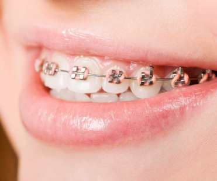
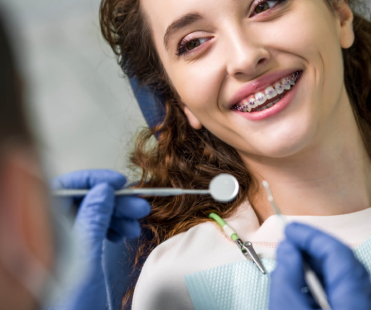
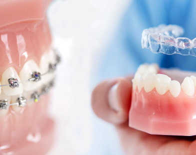
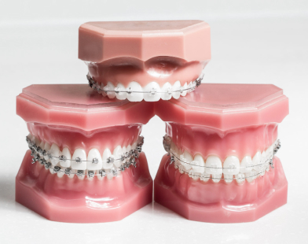

Блог Orteam
Рубрика

Сначала:

Что такое правильный прикус, виды неправильного
и как определить
Прикус — способ взаимодействия зубных рядов, который возникает при
полном смыкании
верхней и нижней челюсти. Неправильный прикус провоцирует ускоренный износ и разрушение эмали, а также
корней и периодонта резцов, клыков и коренных зубов.
Читать полностью

Брекет-система: что это, какие бывают брекеты, как их устанавливают
Брекет-система — сложносоставное несъёмное ортодонтическое устройство, предназначенное для исправления неправильного прикуса или неровности отдельных зубов.
Читать полностью

Сколько носят брекеты: сроки
выравнивания зубов
Когда пациенты принимают решение об ортодонтическом лечении с применением брекет-системы, встаёт вопрос о том, сколько времени займёт лечение. Поскольку срок лечения очень зависит от конкретного клинического случая, предварительные сроки определяются индивидуально. Важно понимать, какие факторы влияют на продолжительность ношения и каких результаты можно ожидать, как в процессе лечения, так и после завершения.
Читать полностью

В каком возрасте можно ставить брекеты детям
Каждому ребёнку в возрасте 6-7 лет необходимо посетить стоматолога-ортодонта. В этот период начинается процесс смены зубов, и при необходимости, можно приступать к раннему ортодонтическому лечению. Метод и продолжительность коррекции определяются врачом. В ряде случаев, достаточно наблюдения, либо выполнения ряда упражнений для коррекции миодинамического баланса ребёнка. Для исправления прикуса у детей и подростков используются съёмные пластины, аппарат Хааса или капы. Подросткам предлагаются разнообразные брекет-системы. Важно не затягивать с консультацией у специалиста: чем моложе ребёнок, тем более лёгким окажется лечение. Профилактика залог более эффективного и менее инвазивного вмешательства.
Читать полностью

Что можно и нельзя есть с брекетами
Брекеты — ортодонтическая несъемная конструкция, используемая врачом-ортодонтом для коррекции положения зубов при различных патологиях прикуса у детей и взрослых.
Читать полностью

Элайнеры или брекеты: что лучше,
плюсы и минусы
Каждому ребёнку в возрасте 6-7 лет необходимо посетить стоматолога-ортодонта. В этот период начинается процесс смены зубов, и при необходимости, можно приступать к раннему ортодонтическому лечению. Метод и продолжительность коррекции определяются врачом. В ряде случаев, достаточно наблюдения, либо выполнения ряда упражнений для коррекции миодинамического баланса ребёнка. Для исправления прикуса у детей и подростков используются съёмные пластины, аппарат Хааса или капы. Подросткам предлагаются разнообразные брекет-системы. Важно не затягивать с консультацией у специалиста: чем моложе ребёнок, тем более лёгким окажется лечение. Профилактика залог более эффективного и менее инвазивного вмешательства.
Читать полностью

Виды брекетов: стоимость и отличия
Каждому ребёнку в возрасте 6-7 лет необходимо посетить стоматолога-ортодонта. В этот период начинается процесс смены зубов, и при необходимости, можно приступать к раннему ортодонтическому лечению. Метод и продолжительность коррекции определяются врачом. В ряде случаев, достаточно наблюдения, либо выполнения ряда упражнений для коррекции миодинамического баланса ребёнка. Для исправления прикуса у детей и подростков используются съёмные пластины, аппарат Хааса или капы. Подросткам предлагаются разнообразные брекет-системы. Важно не затягивать с консультацией у специалиста: чем моложе ребёнок, тем более лёгким окажется лечение. Профилактика залог более эффективного и менее инвазивного вмешательства.
Читать полностью